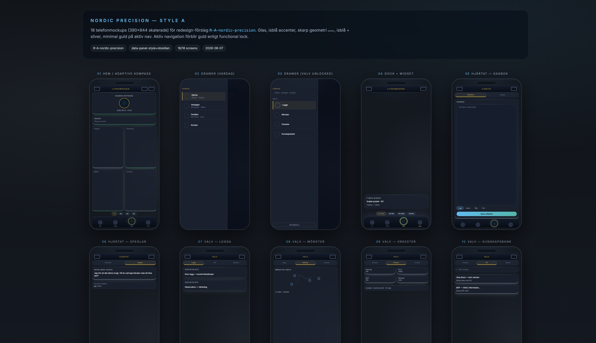
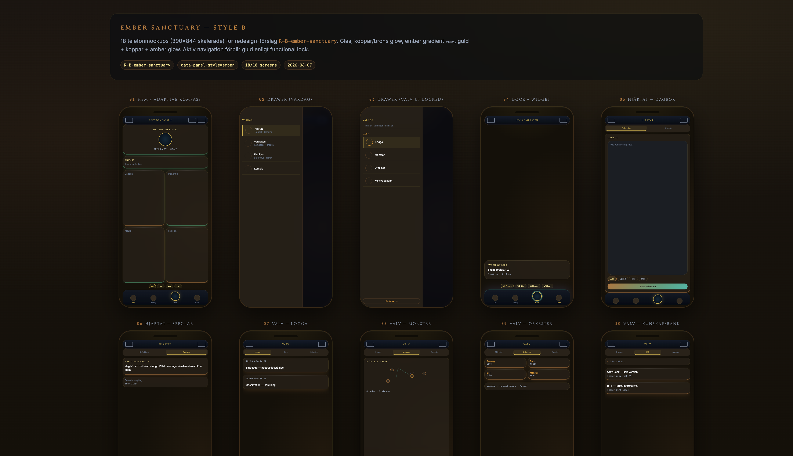
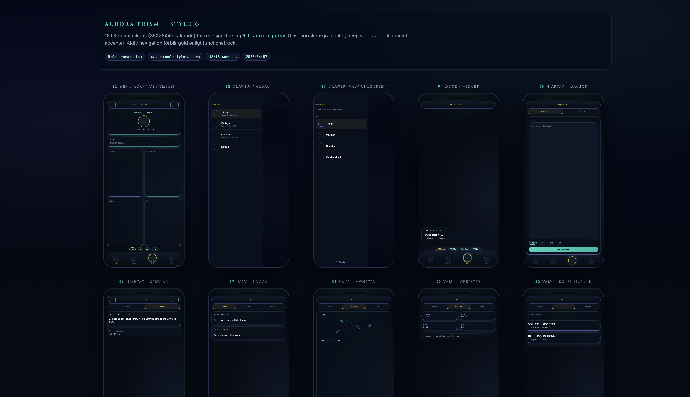

Redesign — bilder (fungerar utan server)
Den här sidan visar PNG-bilder — dubbelklicka filen i Finder eller kör
npm run gallery:redesign från projektroten för interaktiva mockups i webbläsaren.
Style A — Nordic Precision

Style B — Ember Sanctuary

Style C — Aurora Prism
